Tamajoji's playbook
About the playbook
This page was created to help understanding game controls, menus and talk a little bit about hidden and not-so-hidden mechanics found inside the game. You might check the index below to find any specific doubt you might be having throught the game. Have fun :)
Introduction
Tamajoji is a virtual pet, take good care of it to see it grow into different evolutions depending on how you raised it, not only changing their appearence and their behavior. This guide will teach you more about their needs and behavior.
Time and needs
Needs from your Tamajoji are based on real world time, on some game modes it can simulate time passing by when the game tab was closed. As the day go by, check on it from time to time in order to care for it and make sure everything is ok.
Mistakes
Many times during the care guide we will talk about mistakes. It happens when your pet has an urgent need and it's not resolved. When in need they will call for you, and light up the attention icon, you have 15 minutes from being called to solving the reason of the call. Not resolving it on time will count as a mistake. The number of mistakes commited might affect which evolution your pet will grow into, if you make too many mistakes in a short period of time the pet might even die.
Buttons
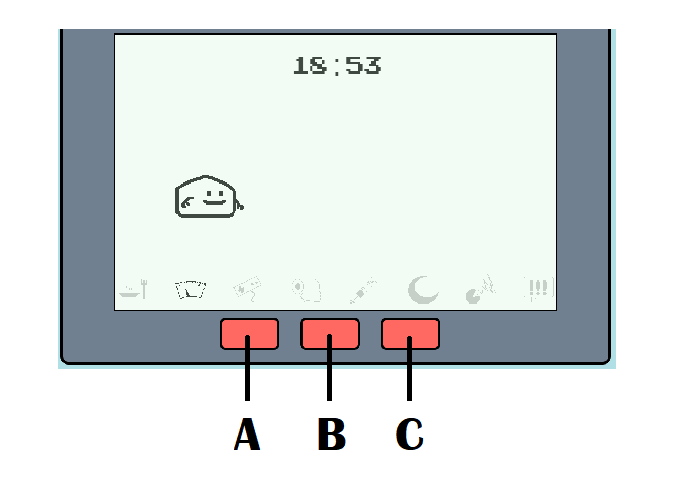
Tamajoji's has 3 buttons
A - Switches between menu options, and also switches options inside menus
B - Enter menus and confirms options inside them
C - Cancel action, or exit from menu
Menus
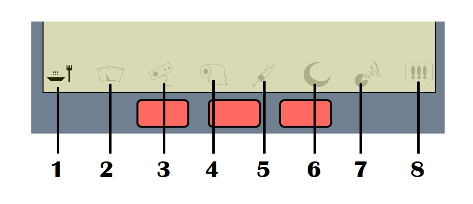1 - Food menu
 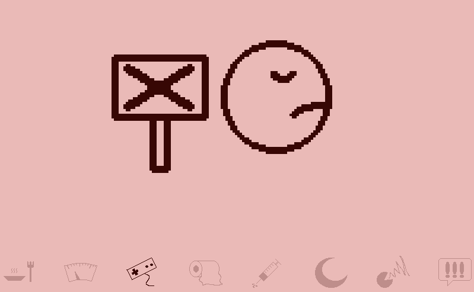
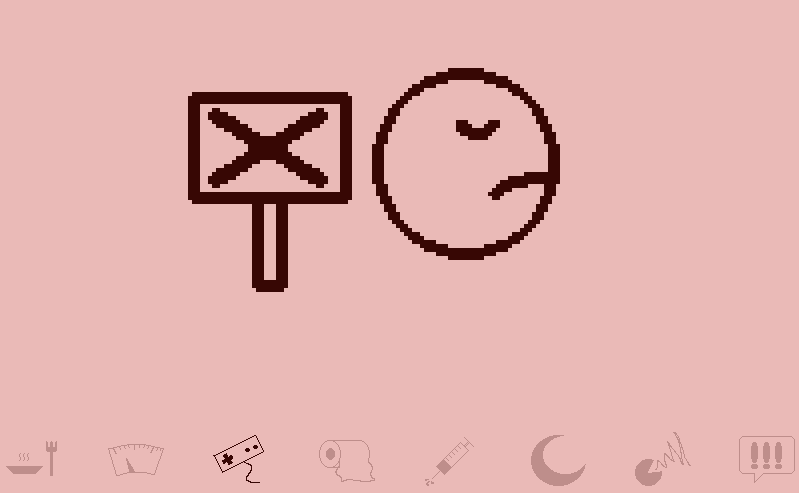
Has two food options for your pet.
A) Meal: Will fill one food heart of the hungry meter. It's healthy, but your pet might refuse
it depending on their discipline level
B) Snack: Will fill one heart of the hungry meter and one heart of the happiness meter.
Pets always want to eat it, but it's more caloric, so they will gain more weight from eating it.
Also, eating too much of it in a short period of time might get them sick.
- don't worry, if your pet is starting to get hungry it won't refuse meals
- if your pet is sick they might refuse eating, treat them before feeding them.
- if your pet doesn't want to eat right now, just wait a little bit and try again
2 - Status menu
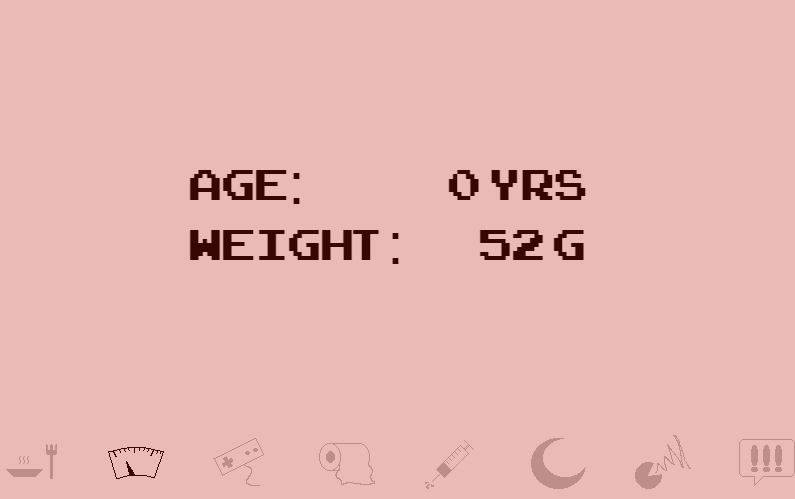 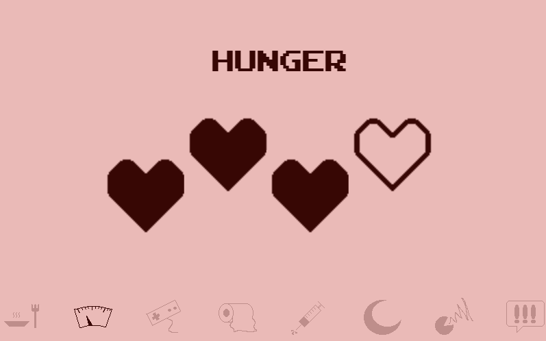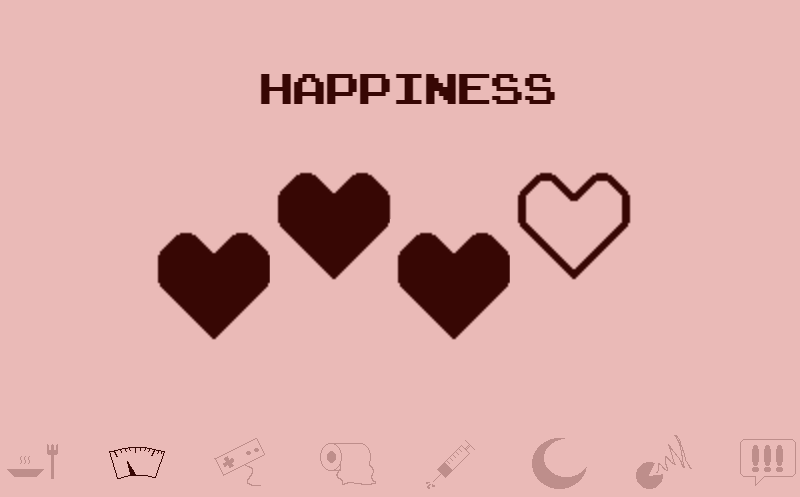 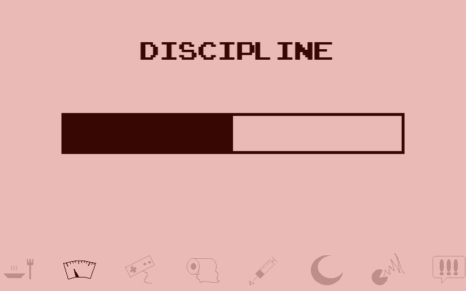
The status menu shows a bit about your pet's needs and information, it has 4 windows:
1- Weight and Age: Each day in the real world counts as a year in tamajoji, to keep your Tamajoji
healthy you need to watch it's weigh, since overweight tamajojis tend to have a shorter lifespam.
2- Hungry meter: Has a heart meter representing food needs, eating fills 1 heart and as time goes on
the heart meters go down. When the bar gets completely empty, your pet will call for you, and will
keep counting as neglect until they get fed.
3- Happiness meter: Keeping your pet happy is as important as feeding them, and letting the happiness
bar drop to zero will have similar effects on their health as letting their food bar drop to zero.
You have two ways of filling this meter, feeding it the snack option, and playing with it.
4- Discipline: Affects the chance of your pet will accept eating healthy food or playing with you,
the higher their discipline bar, the less likely they are to disobey.
3 - Minigame menu
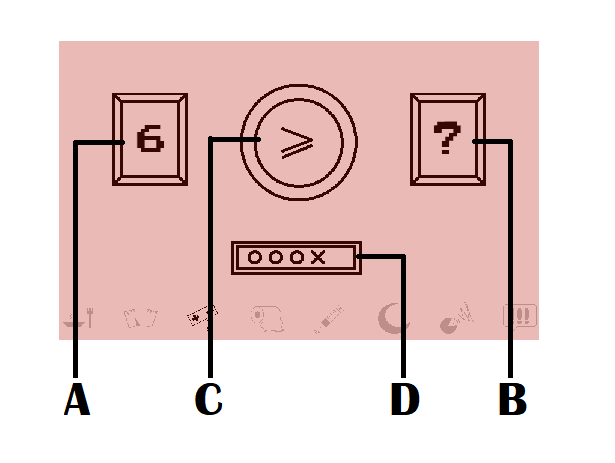
Pets love playing games, winning makes them very happy.
This is a guessing game you can play with them.
It has 5 rounds, win at least 3 to win the minigame
A) is a random number displayed at the beginning of each round
B) is a random number that will be revealed at the end of each round
C) is a signal, which you can contol with the switch button, and confirm with the
confirm button, use it to guess whether the revealed number on the left will be higher than
the number of the right, after it's revealed
D) It's the score of previous rounds
Tip: Pets really like when you get all the 5 guesses correct, perfect scores will grant you
two happiness meter hearts instead of one.
Tip: If their discipline is too low they might refuse to play, just wait a little bit and try again
4 - Toilet menu
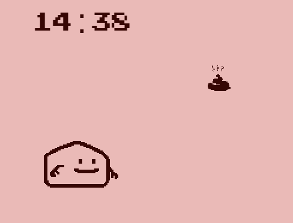
From time to time, your pet's space will need cleaning, use the toilet menu to prevent poop from
accumulating, time uncleaned as well as the amount of poop on the place will increase the chances
of your pet getting sick which will count as a mistake.
Tip:Uncleaned poop doesn't counts as a care mistake by itself, it also doesn't make the alert call.
5 - Medic menu
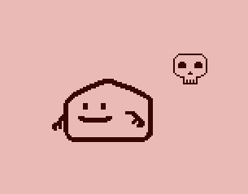From time to time, your pet might get sick, you need to treat them as soon as possible. When they get sick, they will call for your attention, if you don't respond soon this will count as neglect. Besides that, if they get sick for a long period they might even die. Sickness will be indicated by a skull icon beside the pet, sick pets won't want to play or eat untill you treat them by using the medic menu.
6 - Sleep menu
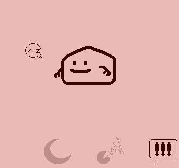
- Tamajojis have a sleep and wake up time. When their naptime come thy will get a sleep bubble floating beside them to indicate that they're trying to sleep
- Turn off the light at the sleep menu to help them sleep well and peacefully.
- Leaving lights on for too long when they want to sleep will count as a mistake.
- They will turn on the light by themselves when they wake up, they're pretty smart.
- Also, sleeping will slow down their metabolism, their meters won't go down as they sleep, (even if you forget to turn off the light) they won't get sick or call you in any way (other than asking you to turn off the lights).
- They might feel a little hungry or bored when they wake up, though
- Sleep and wake up time vary around different species of Tamajoji, but they all sleep at night and wake up in the morning.
7 - Discipline menu
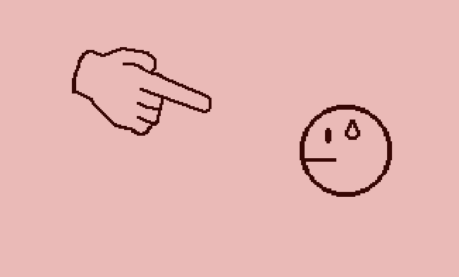
From time to time, aside from making alert calls for being in need of attention, tamajojis
might call you for no reason, just because they're misbehaving. If you scold them using the
discipline menu during a fake call, the call will resolve and your pet will gain discipline.
Note: Missing a fake call won't count as a mistake
Note₂: Attending to these calls is the only way of gaining discipline, scolding your pet
outside of these situations will result on losing a happiness heart on the meter and won't affect
discipline.
Toolbar
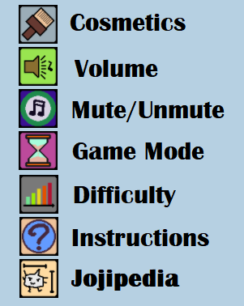
Cosmetic menu: Choose a different visual for your Tamajoji
Volume menu: Control the ingame sounds, alert and button sounds
Mute/unmute: Mute/unmute your game!
Note: Due to browser restrictions the game automutes when open, this can be turned off at
the volume menu
Game Mode Menu:
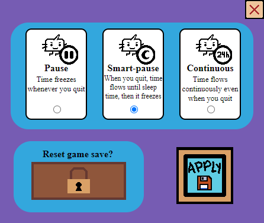- Tamajoji has an option of simulating the time passing while the game tab is closed, or the pc is turned off. To enable this option, choose the continuous mode, it simulates the game as if it was running full time.
- The pause mode, makes your tamajoji freeze in time every time the game tab is closed, their needs won't increase but they will also not age or grow while the time is stopped.
- Modes are interchangeable at any time, for example you can enable pause mode during a continuous mode gameplay You can enable mode to pause the game for a while, in case you aren't able to care of your pet for somedays, it will
- And finally there is the Smart-Pause mode, which keeps the game paused until you open the game tab for the first time in the day, no risk of getting your Tamajoji neglected because they woke up and is asking for attention even before you turned on your PC.
- Smart-Pause mode will simulate the rest of the day and the sleeptime of your pet then just after it wakes up it will pause the game until the time you come back.
- Tip: When playing on smart pause, if you're finished for the day, turn off the lights before leaving, in order to avoid getting a mistake for leaving the lights on when the pet's sleeptime come.
- This menu also has a reset button, hidden under the lock icon. After unlocking the reset button, pressing it returns your Tamajoji to the egg state.
Instructions: An amazing, beautiful and useful page teaching eloquently and smoothly
everything about the incredible universe of Tamajoji
Jojipedia: Knowledge and facts about the different stages and evolutions of Tamajoji
Evolutions
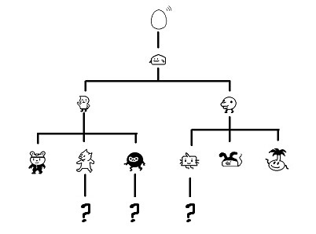As time goes by, and your pet grows older, it will evolve into a new form, with different appearence and behavior, the main differences you might notice are:
- Their sleep schedule
- How much food and play they need
- How often they get sick
Different species have different lifespams, caring well for a pet will result in a more healthy, independent and long lived evolution.
There are 5 stages in your pet's life: Egg, child, teenager, adult and senior.
During egg stage all you need to do is wait for it to hatch into a child. It has no needs, but can't do many things other than shaking. The child stage lasts a day, and the teen stage lasts 2 days.
Adults live different lifespams depending on their species, but also depending on their weight. Overweight pets tend to have a lower lifespam.
Most pets only evolve up to the adult stage. However, following specific care Instructions, some might achieve the special stage of Senior, getting a rare evolution with a lifespam a bit longer than the regular one. Jojipedia menu might teach you a bit more about how to achieve these special evolutions.
Death
Every Tamajoji has a finite lifespam, as their cycle ends they will hang out for a while to
say goodbye before joining digital afterlife. You will still be able to check the status menu,
all other menus are disabled. When ready to move on, pressing the C button will restart the
Tamajoji life cycle, bringing you a new Tamajoji egg for you to care.
Possible causes for death are: too many neglect mistakes in a short time, getting sick for too long or
simply old age. Also worth noting that Weight doesn't directly causes death, but it shortens
the pet's longevity.
Credits
Thanks to:- Aetheris, for creating the original Achiji character design
- Hum4n for helping me with the cosmetic section and designing the Cosmic Human menu skin
- Miki for coming up with the game's name
- Queridão for helping with game mechanics and debugging
- Zurex, for helping with character design, and with getting the game published
- And you! For playing Tamajoji
Programming, art and sounds made by Flixflox (me :] )
Copyright & Attribution
Every third party asset was used under attribution license
Authors of the arts used in the following menu skins Distributed by freepik.com
- Blue squares - davidzydd
- Blurred - freepik
- Chroma - rawpixel.com
- Desert - freepik
- Green triangles - webvillapl
- Purple dash - freepik
- Swish - freepik
- Waves - GarryKillian
Ingame font: Arcade Classic by pizzadudedk